READ OUR TESTIMONIALS
What people say about Cigala Cycling
From first-time sportive riders to national champions and a WorldTour Pro: in their own words.
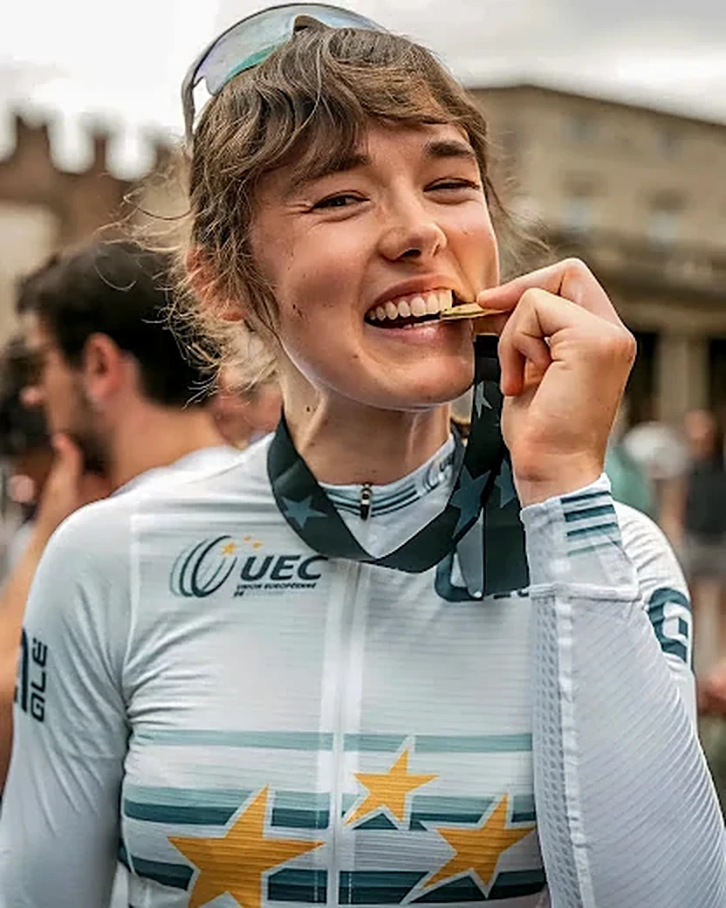

I am delighted to share my testimonial for my cycling coach Matteo from Cigala Cycling.
I have been training with Matteo consistently for the past 12 months and it has been an incredible journey.Read more
My primary goal was to qualify for the UCI Granfondo World Championship in Scotland.
I had been attempting to achieve this on my own for three years, cycling consistently but without a structured training plan.
I never managed to qualify.However, with Matteo’s expertise and guidance, everything changed. When I joined forces with Matteo, I teamed up with a true Granfondo champion who understands exactly what it takes to succeed in these races.
The accountability that comes with having a coach is invaluable, but what sets Matteo apart is that he never breathes down your neck.
He recognized that I needed a different approach and tailored his coaching style accordingly.One of the things I appreciate most about Matteo’s training is its versatility. He plans a variety of workouts and strategies to keep things interesting and effective. This not only prevents monotony but also targets different aspects of cycling, helping me become a well-rounded cyclist.
The most exciting part of working with Matteo is the noticeable improvements I started to experience after just 4-6 weeks.
Since then, these improvements have been consistent and remarkable. It’s incredibly motivating to see the progress I have made under his guidance.
What sets Matteo apart is not just his expertise, but his unwavering support and support.After setbacks from a crash, he never pushed me beyond my limits but instead adjusted the training plan as appropriate.
And let’s not forget the joy of cycling alongside Matteo. Riding with him is not only an opportunity to observe and learn from a seasoned professional, but also a chance to have a great time. His endearing and infectious personality makes every session enjoyable, creating a positive and supportive environment.In conclusion, I can confidently say that my decision to work with Matteo from Cigala Cycling has been the catalyst for my growth and success as a cyclist.
His confidence in my abilities has made me a more confident rider. With his expertise, support, and personalized approach, I have achieved my goal of qualifying for the UCI Granfondo World Championship.I am grateful to have him as my coach and highly recommend him to anyone looking to take their cycling to the next level. With Matteo’s guidance you can achieve your full potential.

It is hard to put into words what Matteo has done for me, but I will try my best. He has not only made me fall in love with cycling, but has believed in me even when I didn’t. I was a complete newbie to the sport until my path crossed Matteo’s. He has given me a crash course in cycling and has brought me to somewhere I never would have imagined to be.
Read more
As I speak, I am current European Gran Fondo & gravel 19-34 champion, silver medalist at the Gran Fondo Worlds, from only starting cycling last February this year. I would describe Matteo as a perfectionist. He never misses a detail and I think that’s why his coaching works well for me. By noticing every detail Matteo builds sessions that are personalized and pushes you to your very best. While being precise, Matteo’s approach is also fun. Every session is different making the training dynamic. If you are thriving for excellence choose Matteo. If you want to reach your goals choose Matteo.

Matteo Cigala has been an incredible cycling coach, helping me navigate training around my family and work commitments.
His tailored approach has been instrumental in achieving the goals we set at the beginning of the season. Thanks to his guidance, I not only reached my targets but also hit all-time personal best power numbers.Read more
Matteo’s understanding of balancing life’s demands with training has truly made a significant impact on my cycling journey.
With an open mind to the season of 2024 ahead and beginning my coaching journey with Matteo in March there has been some promising and lifetime achievements, one of which was qualifying for the UCI Grand Prix Fondo World Championships in my first RR of the season following by First unplaced A3 in Munster RR Championships.
Matteo’s support has been invaluable in our journey towards building on the progress we’ve made so far. With his expertise, we will continue to strive for even greater achievements. With the goal of this year to be get back into cycling it has truly surpassed expectations.
I truly believe that without Matteo’s guidance and understanding of my commitments, I wouldn’t have been able to make such remarkable progress.
His coaching has not only enhanced my performance but also enriched my overall cycling experience.
Looking forward to the 2025 calendar and pushing my limits to see how far we can push my boundaries.
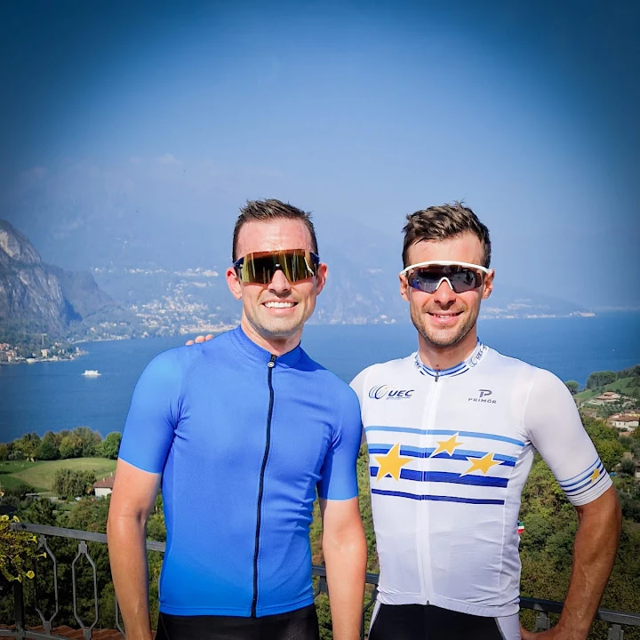
I am a busy professional, and I have wasted too much time in the past with unproven approaches to training.
Matteo has managed to find the perfect blend of high intensity interval training with perfect amounts of the suffering we all love, and the longer endurance training that fits around my busy schedule. I don’t have the free time to dedicate to hours of junk miles, and Matteo has perfectly optimised my training to adapt to what time I do have. I haven’t been an easy client for him, but his tailored programme has somehow always seen improvement.Read more
The highlight as always for me has been getting out on the open road in the couple of Italian trips I have done and a Portuguese trip. I enjoyed them because he had me hopping off the road, fitter than I have felt for years.
Previously if I misses a race weekend I would always feel like I was going backwards, but now I know that the programme can get me ready for my target races with relatively short notice because of the high base fitness.
After two years of training with Matteo, and two years of camps, the programme feels like it is working but most importantly the numbers prove that it’s working.

Matteo was the first coach I worked with for cycling, and it has been an amazing experience!I got in touch with Matteo because I had a goal: to complete the Mallorca 312, a must-do event for cycling enthusiasts, in my opinion. A few years earlier, I completed the 225 km route by following a generic training plan I found online. While I felt fit, I ended up overtrained by the time the event came around.
This time, I wanted to train properly with expert guidance, and I couldn’t have been happier with Matteo’s support. He tailored the plan exactly to my needs, always keeping my availability and life schedule in mind. If I pushed too hard in a session or wanted to go for a long ride, Matteo adjusted the plan to prevent overtraining. I was also able to give feedback on sessions, which helped ensure the plan stayed realistic and effective.Read more
Thanks to Matteo’s approach, we saw great improvements in my FTP, and our weekly calls allowed me to ask questions, learn more about training principles, and grow as a cyclist overall.
I really appreciated how responsive and thoughtful Matteo was throughout the entire process. I truly had a tailor-made plan every single week, and as a result, I showed up to the Mallorca 312 in the best shape I’ve ever been in.
I highly recommend Matteo to anyone looking for a coach, whether you’re training for a big event or just want to become a stronger, smarter cyclist.
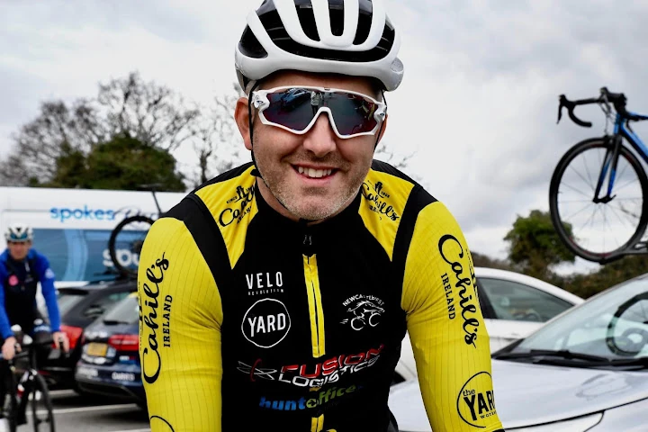
Having worked with Matteo for the past number of years, I would highly recommend him as a coach. As with the majority of people juggling work / family life and cycling can be difficult however Matteo’s ethos of training smart has worked and continues to work very well for me.
Matteo schedules sessions that are built around your available time and utilizes quality over quantity. I have seen improvement year on year while working with Matteo.Read more
I have also been able to leverage off his vast knowledge and experience racing and any questions or queries regarding racing / nutrition are always answered.
For anyone considering working with a coach then look no further than Matteo.

I’ve worked with Matteo twice over the past 8 years.
First time was a 9 month training plan to get me from couch (literally!) to Haute Route Pyrenees in 2017 to mark my 60th birthday. Turned out to be the experience of a lifetime, due in no small part to Matteo and his coaching skills.Read more
More recently, I have worked with Matteo to help me recover from heart disease and a cardiac procedure this year (2024), which involved having several stents inserted in a main artery.
Matteo set up a steady and gradual training plan for me to help me both recover a level of fitness and set up a platform that allowed me resume regular cycling.
As a non-elite or serious cyclist, I can highly recommend Matteo to anyone interested in getting fit and ready for any cycling goal, no matter what level you’re at or what age you are!
Thank you Matteo.
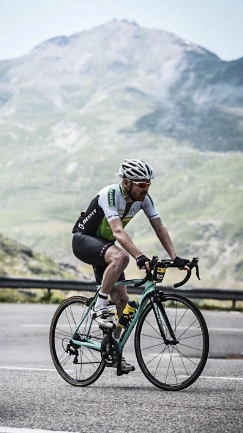
I’d highly recommend Matteo as a coach. His training plans are tailored to your goals and schedule and he is quick to share his insights and advice on training and racing. He is also excellent at using technology to adapt training plans to changing circumstances, something which has been very valuable during the COVID-19 lockdown.
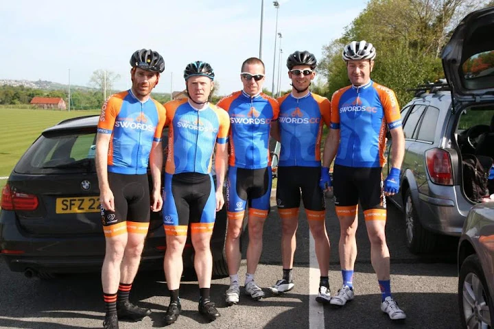
Matteo’s #TrainSmarterRideFaster ethos is the definitive way to train if you don’t have the time or appetite to train for endless hours. Following a plan tailored by Matteo will cut out “junk miles”, avoid over training and illness to get you stronger & riding harder than ever before.
Your personalised plan and training sessions will be easy to follow with clear concise explanatory notes and tips. Matteo will be watching your sessions and mapping your progression providing continuous communication along the way.Read more
The big revelation for me has been how fresh I feel following a full winter training and spring racing schedule tailored by Matteo…Much less fatigued than everbefore with less hours of training! Transitioning into the remainder of racing season feeling mentally and physically prepared to achieve success is testament to Matteo’s ability to provide his coached riders with balanced training programs which can be integrated with daily life commitments.
What’s the catch? …be willing to stick to your personal training zones and stick to the plan formulated for you by Matteo. This may challenge your current training habits and approach to cycling but it will work for you regardless of your age or current fitness level.
Highly recommended.
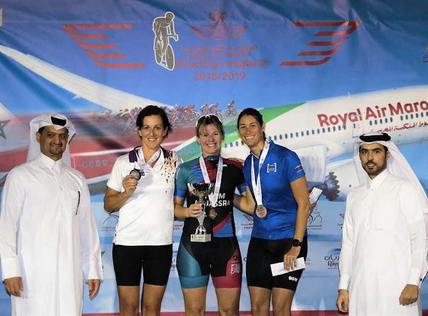
I’m an ex-triathlete turned amateur cyclist who’s been racing on and off in both disciplines for about 8 years. At the moment I live in Doha, Qatar and have not long completed the race season where I placed 1st in the Ladies B National League.
With the daunting task of moving up to the A League in September, I made the decision to seek out Matteo for some professional advice and coaching.Read more
Like many of us on here, we all have busy lives so I don’t have the time or motivation to carry out junk millage.
I’ve been on Matteo’s programme for 7 weeks and I absolutely love the sessions!! The mix of intervals are fun, interesting and the sessions fly by. Within 24 hours he replies to every message and session, he must be surgically attached to his laptop!!
In Qatar the race season is now finished so I’m on Base and Build training. After 7 weeks of following his programme, which is mainly working in Z1/2 with bits of Z3, I’ve managed to get a PB FTP of 207W. I would never of thought this gain was possible from a base/build period of training.
I’m delighted with this progress and can’t thank Matteo enough
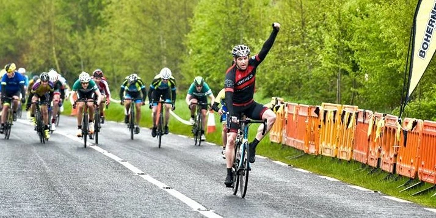
“I had provided a testimonial in May to Matteo after reaching what I beleived would be the pinacle of my first season of open racing, but decided to do one for him again at the end of the season. I had competed in 4 open A4 races and won 2 of them and been promoted to A3. Seasons objectives complete.
But chatting with Matteo, we decided not to settle and see how far I could go, could I get some points in A3. We set about adjusting the plan, shedding some kilos and building on power and stamina for the longer races. I competed in 3 open A3 road races, getting dropped in the first, finishing 6th and picking up 5 points and then going winning my 3rd race, picking up 10 points and securing promotion to A2 in 3 open races.Read more
I suffered in a big way in my first couple of A2 races, but Matteo encouraged me to trust in my training and race smart and enjoy myself as I had achieved by 2017 and 2018 goals before in my first 5 months racing.
As the season closed, I began to find form and am going into 2018 confident that with my coach and my desire I can secure more results in the season ahead.
Thanks Matteo and looking forward to working together into 2018!”
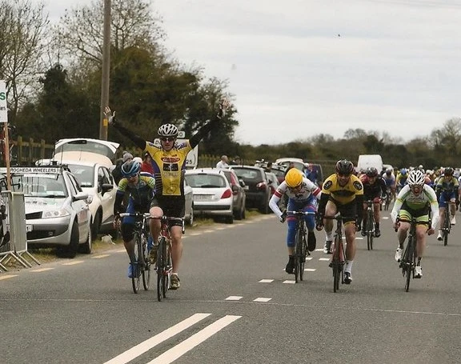
“A massive thank you to Matteo Cigala at #cigalacycling for all your help over the past year. I can remember it was exactly a year ago that I was struggling to finish with the A3 bunch. In June last year Matteo started coaching me and it was something of a revelation. Up until then I thought training meant cycling for miles at a steady pace. Matteo made me reconsider how I was training and to set manageable goals. He also informed me about the importance of training according to heart rate zones and how to develop a strong core. In addition, I learned about what to eat before and during a race. It was not long before I started to improve and by August I finished as the first A3 rider in the Wexford 2 Day Race.
During the Winter months I had the privilege of training with a strong group of riders who inspired me to improve further. Our training sessions were sometimes tough but it provided me with an opportunity to gauge my progression. Before commencing the racing season I was asked to set goals, identifying my weaknesses and my strengths. I commenced the cycling season in February as an A2 and by March I had gained my first points finishing 2nd in the Lucan GP. I felt myself improving from week to week as I followed Matteo’s training plans. Finally last week I achieved one of my goals for the season : I won the Connor Coombes GP.Read more
This weekend I will compete in my first A1 race, and in May, Ireland’s top event, the An Post Ras. I may find the pace difficult at first but with Matteo’s support I am certain that this season will be my best yet. For anyone considering working with a coach I could not recommend Matteo highly enough.”

“I had entered a seven-day mountain stage race in the USA and contacted Matteo to assist about 8 months before the event. My goal was to first to finish this demanding event and maybe try to finish in the first half of the GC. Matteo gave me a structured training plan with periodization for the winter and spring leading up to the event.
Read more
The plan dealt directly with the demands of the event which included very long climbs and sustained efforts at altitudes of between 2200m to 3600m. The plan was properly tailored to meet the amount of time that I could realistically spend on the bike each week (8-12 hrs). I was now following a structured routine that only slightly increased the time commitment to what I had done previously, but now it was focused on the whole aspect of the training season both on and off the bike. Matteo’s plan emphasises the importance of rest, recovery, gym work and nutrition. In particular Matteo understands perfectly the balance between training at a high intensity to progress fitness and knowing when to back off and not push too hard – something we all tend to get wrong when we are on our own. This was the most eye-opening part of the plan for me. I was not training any harder but getting better results. He understands power and how to use it properly – Matteo’s training plan does not just simply chase higher FTP numbers like other training plans. On one-to-one training rides with Matteo, I learnt huge amounts about racing, pacing, bike control, dealing with attacks, TT strategies and sprinting. The result? It was amazing to see what I could achieve with this proper training regime. During the event, I felt stronger each day of the race and ended up in the top 50 in a highly competitive field which included full time international professional racers. This was a result which was way above my initial goal. I would recommend Matteo without hesitation if you want to reach your potential on a bike. The results will surprise you and you are unlikely to get there on your own.”
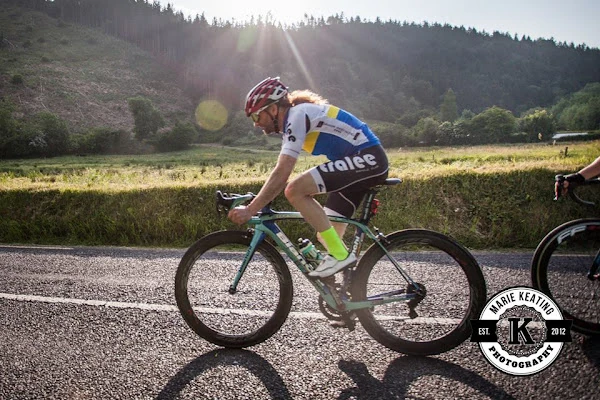
“I’d been training 14 – 16 hours a week over the winter with another coaching outfit & gettingnowhere before calling Matteo. In March ‘16 I went looking for another coach & gave Matteoa call to see if he was any better to what Id previously experienced (Lots of promises butonly generic training plans).
Read more
I knew Matteo was “The Man” within 20 minutes of the first call.His knowledge & insight into effective training is astonishing.Matteo managed to raise my FTP from 220w to 260w in less than 4 months & my sprint from600w ish to 920w. I went from being a4 bunch fodder to ending up with being upgraded toA3 with points to spare & county hill-climb champion.This really is one to one coaching; with Matteo on the phone or what’s app every couple ofdays seeing how training is going, what are the “Sensations” & changing the plan asnecessary based on the at least weekly feedback he requires. It’s a great sign when yourcoach is ringing you to demanding feedback so he can make the plan better.Training sessions are very well planned & interesting. Sessions are tough but not murderwith enough variety that Ive never not looked forward to going out of an evening &importantly you know exactly what each interval is aimed at improving. With no junk miles it’sall killer & no filler & you’ve plenty recovery to go again on the next session.The importance of recovery, nutrition, flexibility & strength are also a large part of the training& very well explained. With a couple of flexibility sessions a week built into the plan I cannow stay comfortably in the drops all day which wasn’t the case before.All in all I could not recommend Matteo’s coaching more highly. It really is one to onecoaching with someone who loves what he does.”
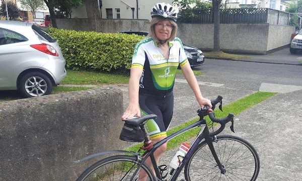
“I contacted Matteo after having attempted the Ras Mumhan in 2017 and missing the timecut on day 1. Previously I hadnt known what type of sessions to do and when to complete them which resulted in a poor return on a lot of hours training.
Read more
Matteo set out month to month the sessions to be followed and through a smart and measured approach i was able to hit the early season races both fitter and fresher than the previous season. The training sessions were very enjoyable, varied and purposeful and resulted in realising a long held ambition by finishing the 2018 edition of the ras mumhan. thanks Matteo!”
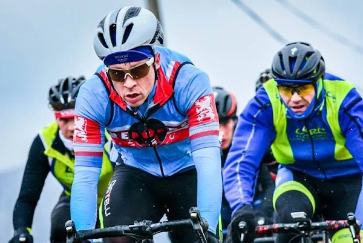
Although I’ve been cycling pretty much all of my life I have never raced. However the opportunity torepresent Ireland in the Gay Games (Olympics) in Paris in August 2018 led me to take my trainingseriously. Having been a member of Orwell Wheelers for many years I had been tempted by racing butwas put off by the commitment required.
Read more
Matteo gave me a tailored programme which allowed me to fit atraining schedule into my busy and active life (without upsetting my wife and family!) Already after sixweeks I feel a huge benefit and improvement to my cycling speed and endurance and it’s a lot of fun tobe working with a professional coach of Matteo’s level. I look forward to seeing how much further I canprogress before the Games in a few months. I would thoroughly recommend him for anyone who feelsthey need to improve their cycling skills.
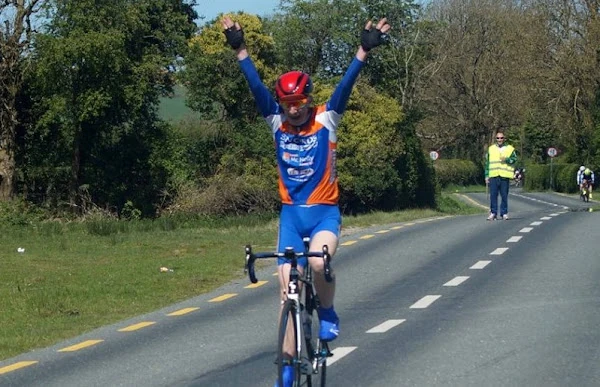
“I’ve been racing for just over and month and already 2016 is shaping up to my best season ever with some great results so far. I couldn’t be happier with my progress and I’m delighted the regular training and structure is paying off. Matteo has helped me a lot, and has shown me how to make the most of my time on the bike so that nothing is ever wasted.
Read more
His guidance, support and encouragement has given me the confidence to keep going and aim even higher for my goals. #trainSmarterRideFaster”
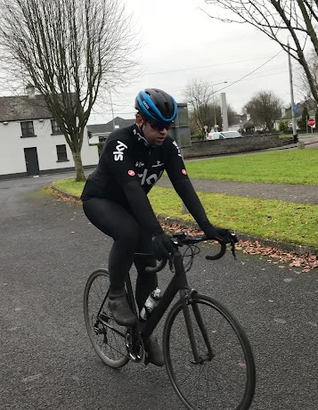
“I had always been into keeping fit and training in a variety of ways ever since I was a teenager but as I got older the usual stuff of going to the gym and playing football just got boring and I lost interest in training and I put on a lot of weight as a result.
This year I decided to make a change and got myself a road bike and wanted to lose weight and become fitter with the goal of racing.Read more
I started going out on my own around my local area but found I wasn’t making progress for the amount of time I was putting in so I knew I needed more structure to my training.
I looked online about finding some cycling coaching in Ireland and Matteos name popped up in a video I was watching from another coaching company so I looked him up liked what I saw and decided to contact him.
I also contacted another coaching company but only Matteo got back to me and while he was on the Ras which I knew straight away that he was serious about what he does. We chatted on the phone for around 40 mins or so and got the ball rolling.
Having a structured training plan has brought me on leaps and months in the past 6 months and I’ve become a lot healthier, fitter, happier.
To date I’ve lost close to 16 kg thanks to Matteos coaching and support, most importantly I look forward to every session that is planned out for me. I couldn’t recommend him highly to anyone thinking of getting the ball rolling with training no matter what your goals are.
Rob Kavanagh”
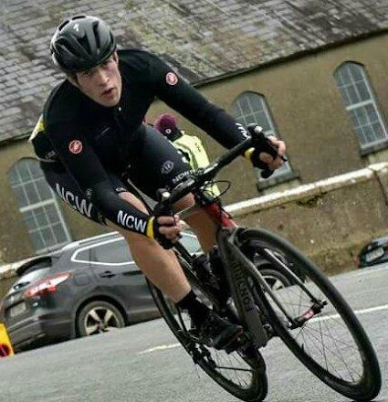
“Joining Cigala Cycling and working with Matteo took the T out of tedious and put back the M for Motivation. I no longer have the mental stress of racking up hours and hours of junk miles or the stress of creating a program where I constantly think “will or won’t it work”.
I have gained hugely this season in power and fitness and matteos help getting me from 95kg down to 79kg was a massive factor. I trust Matteo to keep me physically fit, healthy and keep my relationships in tact with the flexibility and time management he provides me.Read more
Every session is different, exciting and more importantly, enjoyable. Its a motto I live by now….Train Smarter, Ride Faster”
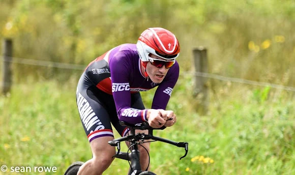
Despite getting to A1 last year and doing several one day A1 races, in Suir Valley 2016 I took a bit of a kicking. The Rás 2017 was my main goal but after failing to finish SV3D I wasn’t sure that would be possible.
Matteo met me and a few teammates in Dundrum in October and within 2 minutes I knew he was the man to help me. We started on a training plan straight away and the structure was just what I needed. I’m feeling ready for An Post Rás and have completed Rás Mumhan.Read more
I’d recommend Matteo to anyone who is serious about cycling and is pressed for time. He has a huge wealth of experience for someone so young and is always available with loads of advice regarding every aspect of the training, racing, diet etc.”
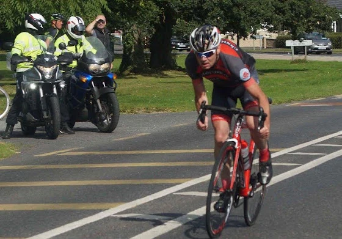
“I have been racing for the last few years but with no structured training plan. Thanks to Matteo I now have a proper structured training plan including rest days and no more junk miles. I find Matteo’s training programmes great as they are designed to suit the individual’s needs. Progress is monitored and the plan adjusted according to results or fatigue.”
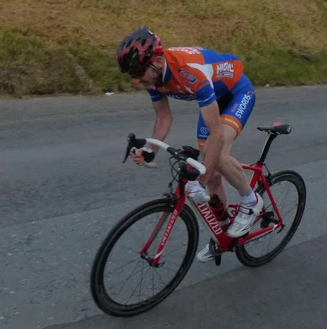
“As a keen A4, vet and club racer with limited time to train, I felt I wasn’t performing to my potential and getting the maximum benefit from the time I put in to training. Things had become a little stale. Working with Matteo has rekindled my enthusiasm for the sport and shown me how to set targets for every session.
Read more
There are no junk miles, and his plans set different challenges each month. Instead of hanging on in races, now I’m more competitive, getting involved in the action and consequently the racing is a lot more enjoyable. I’m looking forward to some good results before the season is finished. I recommend Matteo to anybody at any level who wants to train smart and ride faster.”
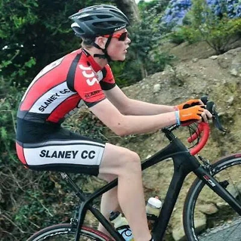
“Thanks a million to Matteo Cigala and for all the help he’s given me over the past the past year on the bike. Great coach and provides flexible training plans to suit you .there will be definite improvements. Would definitely recommend!”
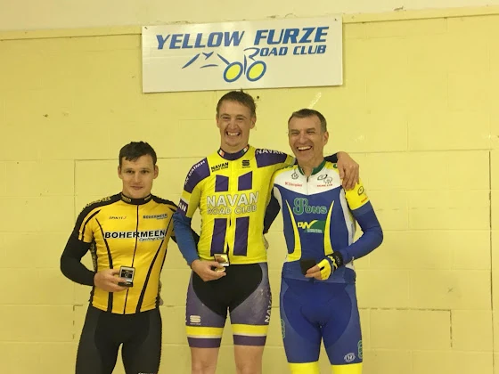
“Thanks again to Matteo Cigala of Cigalacycling, for guidance and training Plans and believing in me to my best season yet, hitting almost all my goals for 2018, Meath GP 10th, 2nd unplaced A4 Tommy Brady Memorial, Seamus Kennedy Memorial 11th, Brendan Campbell Memorial 5th, Mount Nugent GP 2nd unplaced A4, Beechmount Cup 1st unplaced A4, Leinster Autumn Cla
Read more
ssic 4th, meath cycling championship 1st A4, Ronnie Coates Memorial 2nd and upgraded to A3 main goal for 2018 without Matteo’s plans and believe I couldn’t of done it! Looking to 2019 season.”
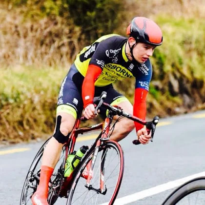
“Top class coach with vast knowledge and experience. Not only do you get a complete monthly session plan for the bike but also for gym training, flexibility and nutrition also, which is great value for money.”
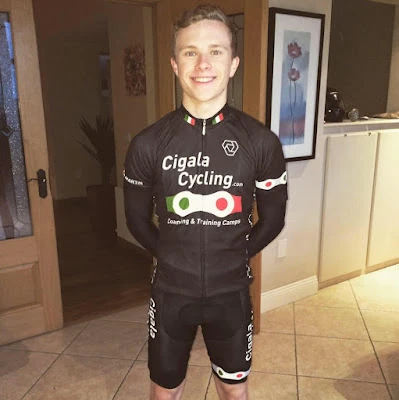
“Matteo Cigala and Cigala Cycling brought me from doing leisure events through the summer last year to race fit in a few short months and that for me is an achievement. My first year racing but Cigala Cycling have been there every step of the way.”
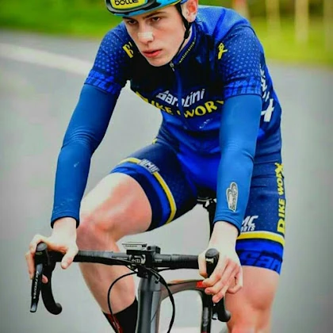
“Thanks to Cigala Cycling for all the help over the winter really helped me improve over the last few months great programme would definitely recommend to all”
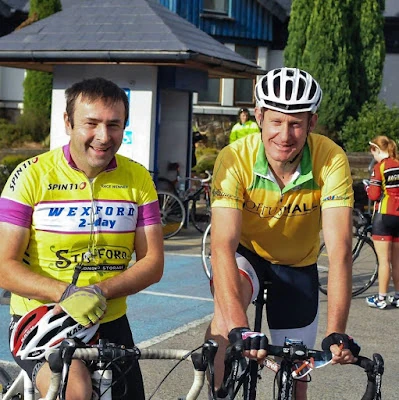
“Since first meeting Matteo at a bike fit organised by Matteo in Dublin, in 2015, Matteos professionalism always shined through. Over the winter months, I had frequent contact with Matteos training crew, in a support vehicle role. Matteo has an ability to inspire his training crew to work with the given plans.
Read more
Matteos training crew learnt new and different approaches and individual development within the crew was clearly evident over the winter months. No two training sessions with Matteo were the same content with each session highly purposeful. Matteo has an ability to inspire riders and believe in their potential, whilst sharing his own experiences and his own coaching. Matteos training sessions are fun, informative, with an emphasis on learning how to train. Looking forward to a continued developmental association with Matteo into 2017. He is also just sound !!”
GREG SWINAND'S IRISH HOUR RECORD
AFTER BREAKING THE IRISH HOUR RECORD LAST NOVEMBER, GREG BROKE IT AGAIN THIS YEAR AND IMPROVED HIS OLD RECORD BY ALMOST 2KM.
On November 21st 2016, Greg Swinand broked the Irish Hour Record.
The new hour record of 46.860 Km/h was set in the Olympic Training Centre Velodrome of Colorado Springs.
On Thursday, November 16th 2017, at the Velodromo Bicentenario di Aguascalientes, Greg Swinand broke the Irish Elite Hour Record with a distance of 48.469km – The new record was only 900 meters from the UCI World Hour Record.
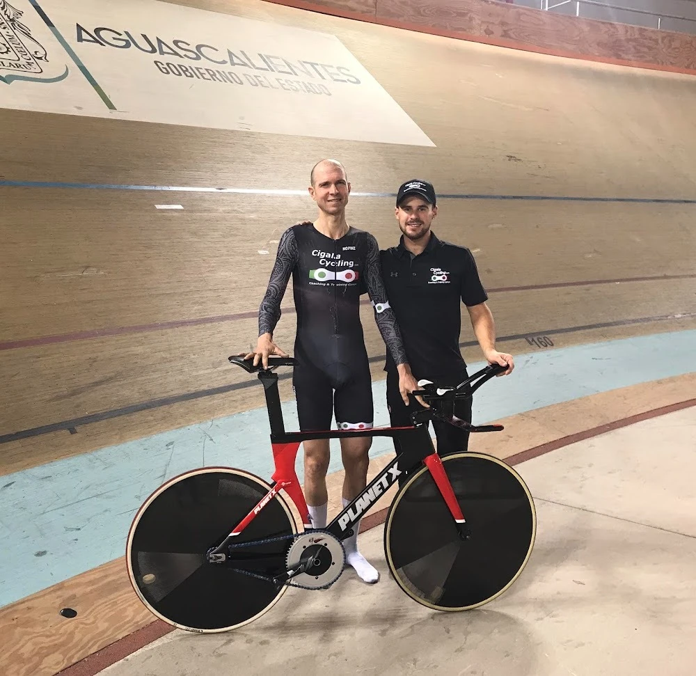
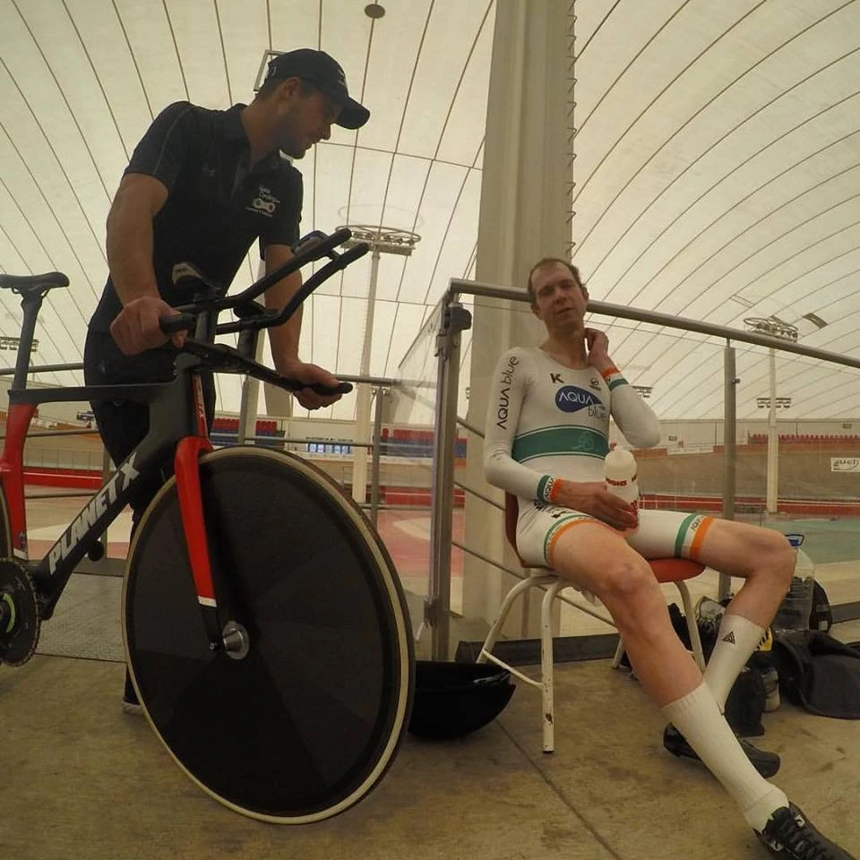
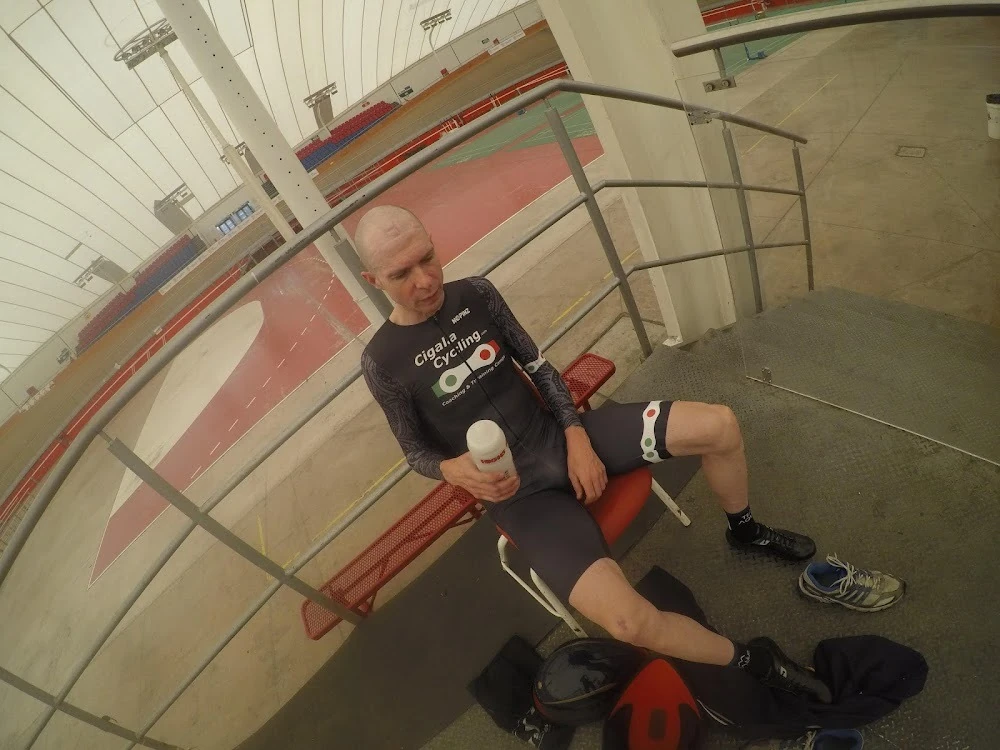
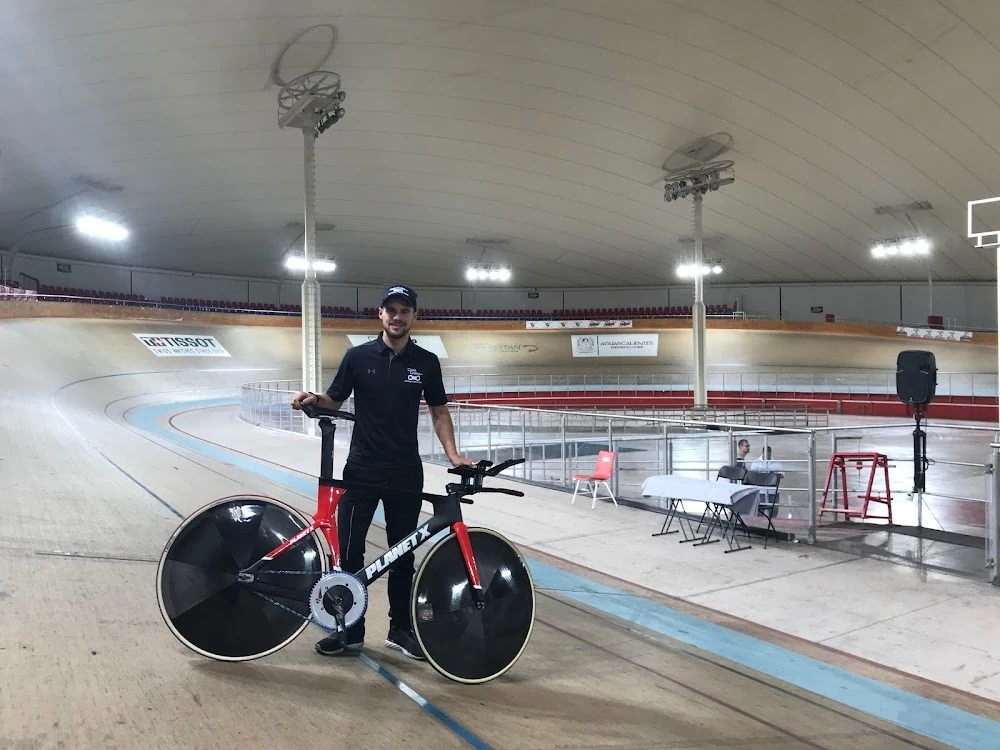
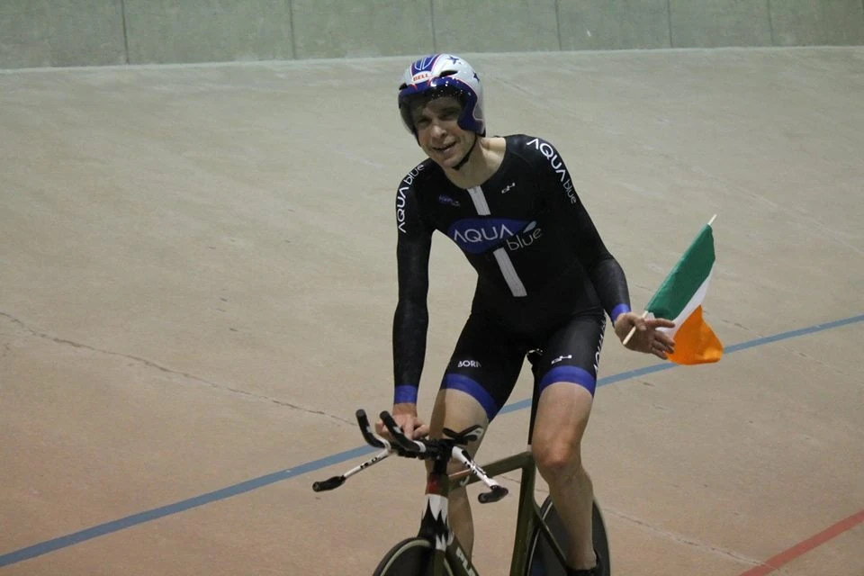
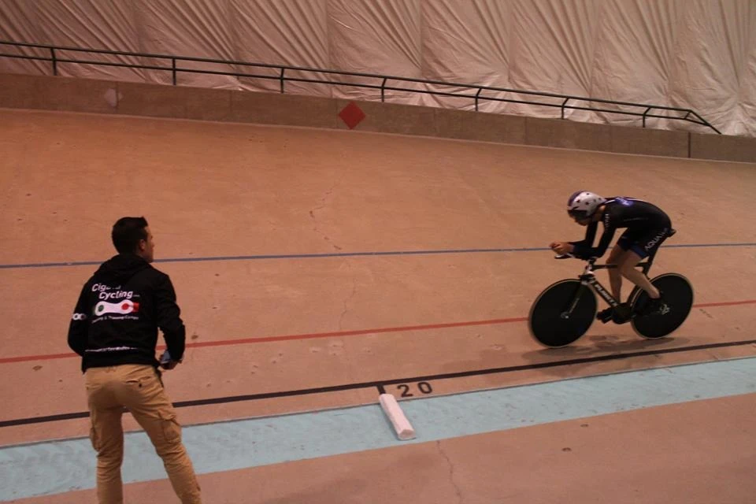
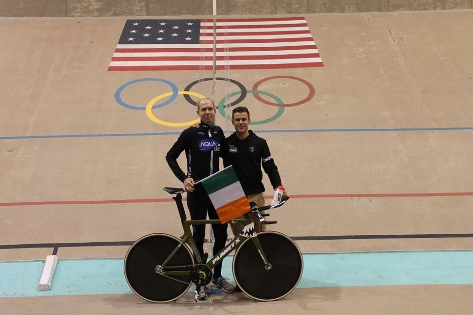
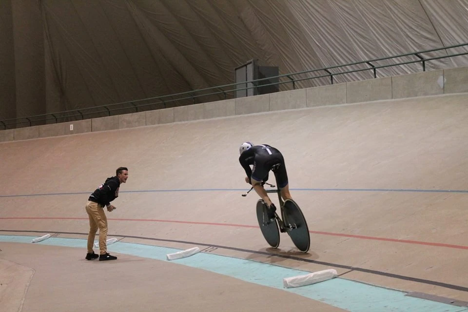
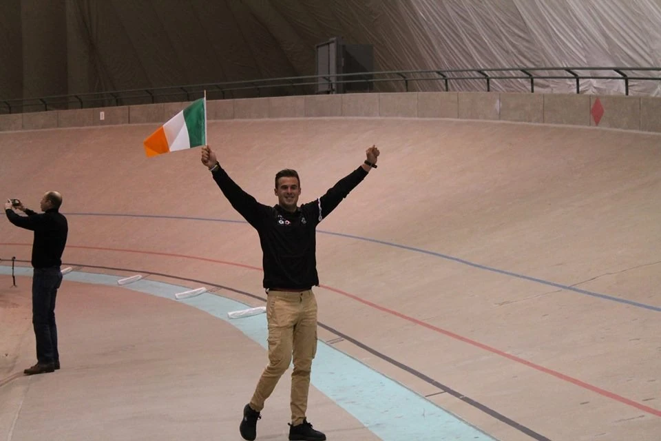
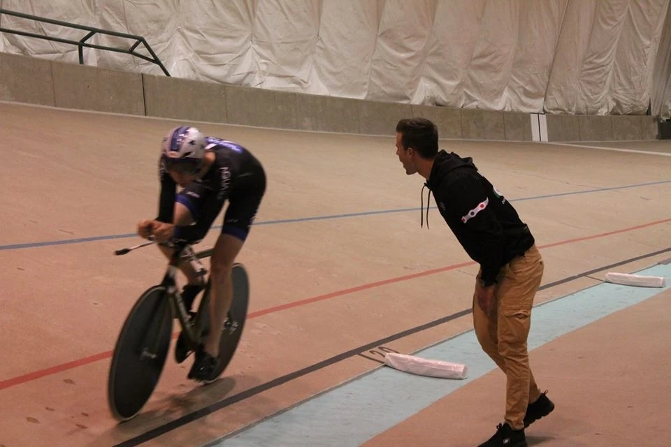
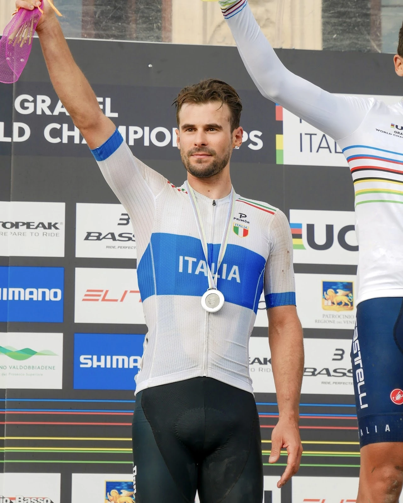
YOUR STORY COULD BE NEXT
Tell us where you are now and where you want to be.